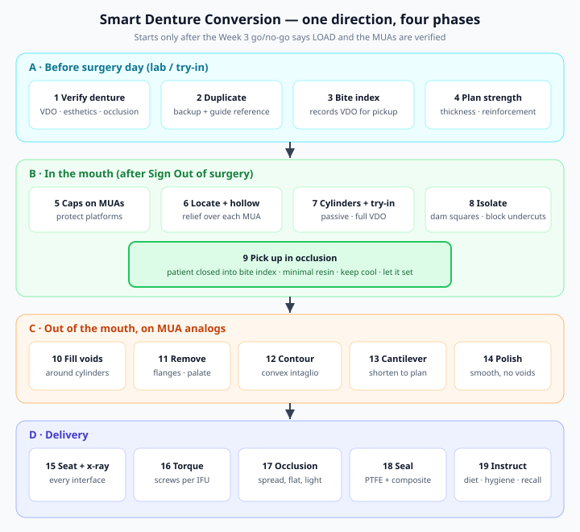
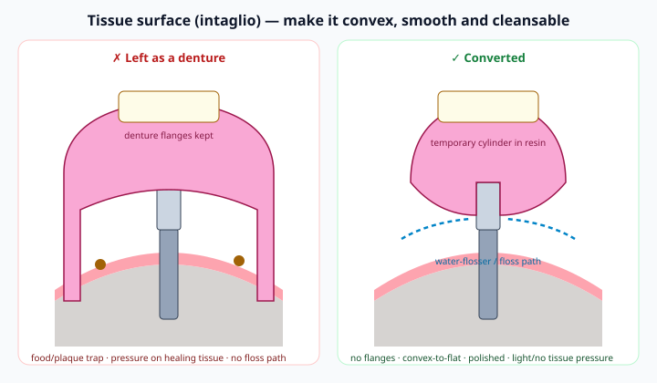
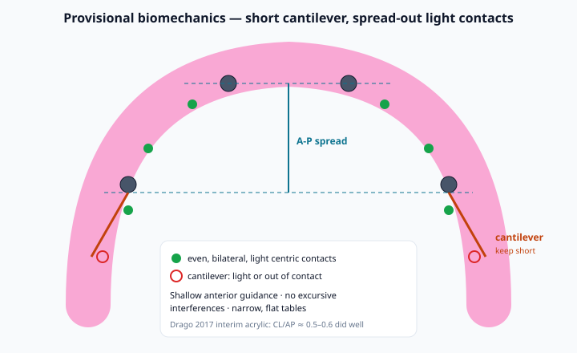

1 Learning objectives
By the end of Week 4 you should be able to:
- Explain what a conversion prosthesis does for the patient and the implants, and when the day should not include one.
- Decide before surgery day whether a denture is fit to convert (vertical, esthetics, occlusion, thickness) and prepare the duplicate and bite index.
- Locate, hollow, try in and pick up temporary cylinders passively at the recorded vertical dimension, with the surgical site protected.
- Remove flanges and palate and contour a smooth, convex, cleansable tissue surface.
- Set cantilever length from the A-P spread and adjust a light, bilateral, shallow-guidance occlusion with nothing heavy on the cantilevers.
- Seat and verify the provisional radiographically, torque screws per IFU, seal access channels, and give instructions that protect integration.
2 What a conversion is & why it works
A conversion prosthesis is the patient's verified complete denture turned into a fixed, screw-retained provisional by connecting it to temporary cylinders on the abutments. Balshi & Wolfinger (1996) described it as a transitional fixed prosthesis that gives immediate function and stability, distributes load across the implants, protects the sutured mucosa, preserves the original vertical dimension, serves as a prototype for the final and helps transfer the bite. Kammeyer, Proussaefs & Lozada (2002) described the same denture-to-screw-retained conversion specifically for immediate loading of a completely edentulous arch — with the caution, at that time, that immediate loading was not yet well documented.
That evidence base has since matured: immediate loading of full-arch fixed prostheses is now a well-documented option when the implants reach adequate primary stability and are rigidly splinted (Gallucci 2014; Papaspyridakos 2014; Week 1). The conversion is what delivers the rigid cross-arch splint on day one. In Drago's 2017 practice series of 192 immediately loaded interim all-acrylic arches, implants needed at least 35 Ncm to be loaded and implant survival was 99.5%.
| A conversion gives you | Why it matters |
|---|---|
| Rigid cross-arch splinting | Limits micromotion of individual implants during integration — the biologic reason immediate load works. |
| The tested vertical, esthetics and tooth position | You already approved them on the denture try-in; the patient's "same-day teeth" look like what they signed off on. |
| A prototype for the final | Phonetics, lip support, hygiene access and occlusion get road-tested for months before you commit to zirconia or a metal-resin hybrid (Week 5). |
| Protection of the surgical site | No tissue-borne denture rocking on fresh sutures and grafts. |
3 Conversion workflow at a glance

Two common ways to get the cylinders into the denture: direct (chairside) pickup, described below, where the cylinders are luted to the hollowed denture in the mouth; and indirect pickup, where you take an abutment-level impression or scan, pour or print a model with MUA analogs, and the cylinders are picked up on the bench (the Week 5 digital route is the modern version). Many full-arch teams — SmartOnX-style workflows included — combine a pre-made prosthesis or denture with a planned pickup so chair time stays predictable. Learn the direct pickup first; it is your backup for every other method.
4 Denture readiness before surgery day
The conversion can only be as good as the denture. Decide at the planning visit (Week 2), not on surgery day, whether the patient's existing denture is convertible or a new immediate denture/prosthesis is needed.
| Check | Convertible if… | Make a new one if… |
|---|---|---|
| Vertical dimension | Verified at try-in (rest position, phonetics, facial profile) | Over-closed, worn or opened without a reason you can defend |
| Esthetics & midline | Patient approved tooth position, smile line and lip support | Patient "never liked" the teeth — they will not like them fixed either |
| Occlusion | Stable, even centric contacts; teeth set over the ridge | Cross-bites or tooth positions you would never place on implants |
| Bulk / material | Enough acrylic thickness to hollow around cylinders and still be strong; compatible resin teeth | Thin, crazed or repaired base; teeth that won't bond to pickup resin |
| Transition line (Week 2) | Prosthetic flange will sit above the smile line after bone reduction | The planned transition would show |
Prep checklist (lab / try-in visit)
- ☐ Duplicate the approved denture (clear or tooth-colored) — it is your spare if the pickup fails and a reference for guides.
- ☐ Bite index (e.g., bite-registration material against the opposing arch) that lets the patient close to the exact vertical during pickup.
- ☐ Mark the midline, occlusal plane and planned implant/MUA positions on the denture from the plan.
- ☐ Decide reinforcement (see section 11) and where you will remove the palate and flanges.
- ☐ For the opposing arch: note natural teeth, implant prosthesis or denture — it changes the forces you'll design for.
5 Conversion armamentarium
| Category | Items (system-specific — match your MUA line) |
|---|---|
| Prosthetic components | Temporary (titanium or PEEK) cylinders for MUA, prosthetic screws (plus spares), MUA protection/healing caps, MUA lab analogs, prosthetic driver, restorative torque wrench |
| Isolation | Rubber dam squares (or protective sleeves) punched for each cylinder, PTFE tape, light-cure block-out for undercuts and screw channels, petroleum jelly/separator on tissue-adjacent surfaces per material IFU |
| Pickup resin | Low-exotherm self-cure acrylic or bis-acryl/composite pickup material per your protocol; mixing tips; flowable/light-cure resin for touch-ups |
| Lab-in-the-operatory | Lab handpiece, acrylic/carbide burs and discs, pressure pot if your resin calls for it, pumice, polishing wheels and paste, articulating paper/foil, Miller forceps, calipers |
| Records | Duplicate denture, bite index, pre-op photos, the implant/MUA map from Sign Out |
| Verification | Radiograph sensor/holder for each cylinder–MUA interface; floss threader or water-flosser tip to test hygiene access before delivery |
Run a full mock conversion on a typodont or printed model with your actual components before your first patient — including timing yourself. That is the single best rehearsal you can do this month.
6 Locate, hollow, try-in & pickup
- Protect the MUAs. Protection/healing caps on; confirm the Sign Out map (site, angle, cuff).
- Locate. Transfer each MUA position into the denture — e.g., marking paste or indicator on the caps and seat the denture, or use the prosthetic guide/positions from the plan.
- Hollow. Relieve the denture generously over each mark so the cylinder can pass through without touching; open occlusal/lingual access holes that line up with the screw channels. Over-relieve rather than bind — resin fills the gap.
- Seat cylinders. Hand-tighten temporary cylinders to the MUAs. Shorten them so they don't hit the opposing arch at closure (keep enough height for retention).
- Try-in passively. The denture must seat completely, at the bite index vertical, with no contact between any cylinder and the denture. If it rocks or the vertical opens, relieve more. Check midline and occlusal plane against photos.
- Isolate. Rubber dam squares over each cylinder down to the tissue; block screw channels (PTFE/cotton) and undercuts so resin can't flow under the tissue, into sutures or lock below the MUA.
- Pick up. Inject a modest amount of pickup resin around the cylinders through the access/relief, seat the denture, have the patient close into the bite index and hold, and let it reach the material's set time. Use water/air cooling if using self-cure acrylic to manage exotherm against tissue.
- Remove. Unscrew, lift the prosthesis with cylinders captured, attach MUA analogs, and go to the bench (phase C).
7 Passivity & pickup pitfalls
A full-arch provisional is a rigid splint; any cylinder captured under strain is stored stress on that implant during the weeks it is least able to tolerate it. Keep every cylinder free in its relief until the resin captures it.
| Pitfall | What you see | Prevention / fix |
|---|---|---|
| Cylinder binding on denture | Denture won't fully seat, vertical opens, rocks | More relief; re-check every cylinder separately before resin |
| Resin under tissue / into sutures | Prosthesis locked, tissue pain, resin fragments at follow-up | Dam squares, block-out, small resin volume, inspect the intaglio after removal |
| Cylinder not fully seated on MUA | Radiographic gap, screw loosening, fracture at that site | Hand-tighten and radiograph before pickup if in doubt; radiograph again at delivery |
| Wrong vertical or shift | Midline off, premature contacts, open bite at delivery | Bite index, patient held closed until set, compare to photos |
| Exotherm against fresh tissue | Burning sensation (when LA wears off), delayed healing | Low-exotherm material, minimal bulk, cooling, follow IFU |
| Weak captured cylinder | Cylinder pops out of resin | Retentive cylinder surface (as designed), clean/condition per IFU, resin around the full circumference |
8 Contouring the intaglio

- Remove buccal/labial flanges and (maxilla) the palate; keep enough bulk around each cylinder for strength.
- Shape the tissue surface convex to flat — no ridge-lap concavities or deep undercuts that trap food.
- Pressure: light or no contact on healing tissue; swelling will increase for 2–3 days (Week 3 post-op), and a tight intaglio becomes an ulcer.
- Fill and smooth every void around the cylinders on the analogs; then pumice and high-shine polish. Porous resin collects plaque.
- Test access with a floss threader or water-flosser tip on the analog model before delivery.
- Phonetics & lip support: removing a maxillary flange can reduce lip support — that is why the transition line and tooth position were planned in Week 2. Check "F", "V", "S" sounds after delivery.
Prosthesis-related tissue hyperplasia around fixed full-arch prostheses is common long term — about 13% at 5 years and 26% at 10 years in Papaspyridakos et al.'s 2012 systematic review — so hygienic design starts with the provisional, not the final.
9 Cantilever & A-P spread on the provisional

Week 2 set cantilever rules for the plan. On the provisional, the most useful clinical data is Drago (2017): 192 immediately loaded interim all-acrylic arches (mostly 4 implants). Mean distal cantilevers were roughly 9–10 mm, mean A-P spreads 18.4 mm (maxilla) and 17.3 mm (mandible), and cantilever/A-P ratios of about 0.5–0.6 generally resulted in successful interim prostheses. 17.7% of the interim prostheses needed at least one repair; mandibular prostheses with complications had slightly greater ratios.
- Most four-implant provisionals end around the first molar or second premolar; remove denture second molars routinely.
- Shorter is safer when the opposing arch is natural dentition or a fixed prosthesis, the patient bruxes, or a distal implant was borderline.
- If you excluded an implant under Week 3 plan B, recompute the spread with the implants actually loaded and shorten accordingly.
10 Occlusion for the immediate provisional
Implants lack a periodontal ligament, so they don't give the same proprioceptive warning or cushioning as teeth; guidelines therefore aim to spread load, keep forces axial and limit lateral loads and cantilever contacts (Kim 2005; Sheridan 2016). For a resin provisional on healing implants, the teaching target is:
| Element | Target on the immediate provisional |
|---|---|
| Centric | Even, bilateral, simultaneous, light contacts over the implant-supported segment |
| Cantilevers | Light or out of contact in centric; no excursive contacts |
| Anterior guidance | Shallow, shared across several teeth; reduce steep incisal guidance |
| Excursions | Remove working and non-working (balancing) interferences |
| Tables & cusps | Narrow occlusal tables, flattened cusps to keep forces axial |
| Opposing denture | Stable centric with enough balance to keep the opposing denture seated — check it doesn't tip |
Adjust with thin articulating paper/foil, sitting up, with the patient guided gently (sedation and LA make self-closing unreliable). Re-check at 24 hours and 1 week once swelling and numbness are gone — the first-day occlusion is never the final one.
11 Strength, fractures & reinforcement
Fracture is the signature complication of resin provisionals, so plan for it rather than be surprised by it:
- Drago 2017 — 17.7% of 192 immediately loaded interim all-acrylic prostheses needed at least one repair (base or tooth fractures).
- Mendonça 2024 — even CAD/CAM-milled PMMA interim full-arch restorations (17 restorations, 11 patients): 17.6% complete fractures within the first year, 12-month survival probability 76% — with large improvements in oral health-related quality of life.
- Long term on definitive metal-resin prostheses, veneer/tooth fracture and wear dominate prosthetic complications (Purcell 2008; Bozini 2011; Papaspyridakos 2012).
Reduce the risk
- Keep bulk around each cylinder and through the connector between anterior and distal segments — that is where they crack.
- Short cantilevers and light cantilever contacts (sections 9–10).
- Consider reinforcement for higher-risk patients (bruxers, natural opposing dentition, thin dentures): e.g., fiber or metal mesh in the denture, or a stronger milled/printed provisional (Week 5). Evidence for any one reinforcement method is limited — choose what your lab and material IFU support.
- Repair kit and duplicate on hand for follow-ups; warn the patient that a crack is fixable and to call, not chew on it.
12 Seating, screws & access channels
- Seat the polished prosthesis; hand-tighten all screws first, then tighten in a cross-arch sequence.
- Radiograph every cylinder–MUA interface; any gap = remove, find the cause, fix.
- Torque prosthetic screws to the value in your MUA system's IFU. Prosthetic (cylinder) screws are typically torqued well below MUA abutment screws — never assume, look it up and post it in the tray.
- Occlusion final check (section 10).
- Seal access channels. Common teaching: PTFE tape over the screw head, then a temporary/light-cure composite. PTFE is easy to retrieve and doesn't stick to the screw (Maluly-Proni 2017); a systematic review of in vitro studies found no single channel-sealing material clearly superior against microleakage (Jain 2022).
- Document: photos, screw torque, components, occlusion notes, radiographs.
13 Instructions & the first 8–12 weeks
| Topic | Teaching message (adapt to your protocol) |
|---|---|
| Diet | Liquid/soft first days, then soft "fork-tender" foods through integration (commonly ~8–12 weeks); no biting into hard foods with the front teeth; nothing hard on the back ends |
| Hygiene | Soft brush, water flosser under the prosthesis once tissues allow, rinse per protocol; show them on the day |
| Call if | Prosthesis feels loose, clicks, cracks; bite feels different; pain or swelling increasing after day 3; any Week 3 red-flag symptoms |
| Habits | Avoid smoking; mention clenching/grinding |
Typical follow-up rhythm
- ~24 h: call or visit — comfort, bleeding, bite.
- ~1 week: occlusion re-check after swelling, tissue under the intaglio, screw access intact, hygiene coaching.
- ~2–4 weeks: occlusion, tissue, phonetics, patient's wish-list for the final.
- ~8–12+ weeks: integration assessment → final prosthesis workflow (Week 5).
14 Conversion troubleshooting quick-reference
| Problem | First move |
|---|---|
| Denture won't seat over cylinders | Relieve more; check each cylinder alone; shorten cylinders |
| Cylinder broke loose from resin | Re-seat on the MUA, clean, re-pick up that site only in the mouth |
| Prosthesis locked after pickup | Unscrew all screws, look for resin in undercuts; section resin if needed — never pry against fresh implants |
| Radiographic gap at delivery | Remove, check for resin or tissue under the cylinder, correct, re-seat, re-radiograph |
| Midline / vertical wrong | Remove resin from the cylinders, re-pick up with the bite index — fix it today |
| Denture fractures during hollowing | Use the duplicate; or deliver a removable interim and convert another day |
| Patient fatigued / sedation time running long | Stop: deliver removable interim, convert at a scheduled visit |
| Screw loosening at follow-up | Check passivity, occlusion and cantilever on that side; re-torque per IFU; radiograph |
| Fracture during healing | Repair same day with the duplicate/kit; reassess occlusion and cantilever length |
15 Conversion vignettes
You are holding the prosthesis on the analogs or about to deliver. GO = deliver as is · CAUTION = fix something first · NO = don't deliver a fixed provisional today.
Case A — Maxilla, 61F, opposing natural mandibular teeth
- 4 implants loaded at 40–50 Ncm; A-P spread 18 mm on the Sign Out map
- Converted denture still has the palate and full flanges; distal extensions reach the second molars (~19 mm cantilevers)
- Radiographs show cylinders fully seated; vertical matches the bite index
Case B — Mandible, 66M, opposing maxillary complete denture
- Flanges removed, intaglio convex and polished, water-flosser tip passes under on the analogs
- Cantilevers ~9 mm with A-P spread 17 mm; all screws torqued per IFU; radiographs show no gaps
- Even bilateral light centric contacts, cantilevers out of contact, no excursive interferences; opposing denture stable
Case C — Maxilla, 70M, four hours into IV sedation
- Week 3 plan B: one distal implant excluded (low torque); only 3 implants loadable, all clustered in the premolar–canine region
- Hollowing cracked the denture through the midline; the duplicate was never made
- Patient increasingly restless; sedation provider wants to wrap up
References (verified sources)
- Balshi TJ, Wolfinger GJ. Conversion prosthesis: a transitional fixed implant-supported prosthesis for an edentulous arch — a technical note. Int J Oral Maxillofac Implants. 1996;11(1):106-111. PubMed 8820130
- Kammeyer G, Proussaefs P, Lozada J. Conversion of a complete denture to a provisional implant-supported, screw-retained fixed prosthesis for immediate loading of a completely edentulous arch. J Prosthet Dent. 2002;87(5):473-476. doi:10.1067/mpr.2002.123985
- Drago C. Cantilever lengths and anterior-posterior spreads of interim, acrylic resin, full-arch screw-retained prostheses and their relationship to prosthetic complications. J Prosthodont. 2017;26(6):502-507. doi:10.1111/jopr.12426
- Mendonça C, de Macedo D, Nicolai C, Madeira H, Van Dooren E, Norré D, Mata A. Digital full-arch implant-supported polymethyl methacrylate interim prosthesis: a practice-based cohort study on survival and quality of life. Int J Prosthodont. 2024;37(4):394-403. doi:10.11607/ijp.8468
- Kim Y, Oh TJ, Misch CE, Wang HL. Occlusal considerations in implant therapy: clinical guidelines with biomechanical rationale. Clin Oral Implants Res. 2005;16(1):26-35. doi:10.1111/j.1600-0501.2004.01067.x
- Sheridan RA, Decker AM, Plonka AB, Wang HL. The role of occlusion in implant therapy: a comprehensive updated review. Implant Dent. 2016;25(6):829-838. doi:10.1097/ID.0000000000000488
- Papaspyridakos P, Chen CJ, Chuang SK, Weber HP, Gallucci GO. A systematic review of biologic and technical complications with fixed implant rehabilitations for edentulous patients. Int J Oral Maxillofac Implants. 2012;27(1):102-110. PubMed 22299086
- Purcell BA, McGlumphy EA, Holloway JA, Beck FM. Prosthetic complications in mandibular metal-resin implant-fixed complete dental prostheses: a 5- to 9-year analysis. Int J Oral Maxillofac Implants. 2008;23(5):847-857. PubMed 19014154
- Bozini T, Petridis H, Garefis K, Garefis P. A meta-analysis of prosthodontic complication rates of implant-supported fixed dental prostheses in edentulous patients after an observation period of at least 5 years. Int J Oral Maxillofac Implants. 2011;26(2):304-318. PubMed 21483883
- Maluly-Proni AT, Anchieta RB, Suzuki TY, Garcia de Oliveira F, Guedes AP, Rocha EP. Sealing the screw access channel with polytetrafluoroethylene tape: advantages of the technique. Int J Oral Maxillofac Implants. 2017;32(5):1132-1134. doi:10.11607/jomi.5347
- Jain S. Efficacy of various implant abutment screw access channel sealing materials in preventing microleakage: a systematic review. J Oral Implantol. 2022;48(5):455-463. doi:10.1563/aaid-joi-D-21-00085
- Gallucci GO, Benic GI, Eckert SE, Papaspyridakos P, Schimmel M, Schrott A, Weber HP. Consensus statements and clinical recommendations for implant loading protocols. Int J Oral Maxillofac Implants. 2014;29 Suppl:287-290. doi:10.11607/jomi.2013.g4
- Papaspyridakos P, Chen CJ, Chuang SK, Weber HP. Implant loading protocols for edentulous patients with fixed prostheses: a systematic review and meta-analysis. Int J Oral Maxillofac Implants. 2014;29 Suppl:256-270. doi:10.11607/jomi.2014suppl.g4.3
- Degidi M, Nardi D, Piattelli A. One abutment at one time: non-removal of an immediate abutment and its effect on bone healing around subcrestal tapered implants. Clin Oral Implants Res. 2011;22(11):1303-1307. doi:10.1111/j.1600-0501.2010.02111.x
- Course context (general sources, not cited for specific numbers): Pikos Institute — Foundational Full Arch Therapy: All-on-XYZ / All-on-4 Level 2; SmartOnX.